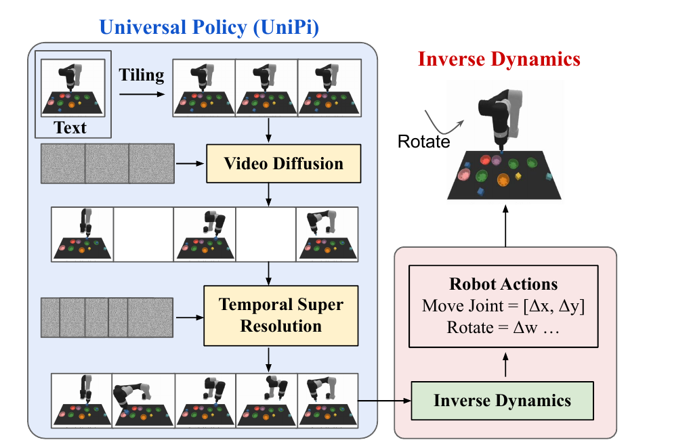

Learning Universal Policies via Text-Guided Video Generation
Yilun Du 等 · NeurIPS 2023 · arXiv:2302.00111 v3 · Zotero JEJZSXEV
UniPi 把策略写成“先生成任务执行视频，再用 inverse dynamics 翻译成动作”：图像统一不同环境的状态空间，文本统一目标接口，视频 diffusion 负责规划，轻量 IDM 负责落到具体本体。
§1 Introduction：为什么要把策略先写成视频
传统多任务策略很难共享同一个输入输出接口：Atari、MuJoCo 和真实机器人拥有不同状态表示、动作维度与控制频率；即使把它们强行 token 化，奖励函数和任务描述仍然彼此不兼容。UniPi 选择绕过统一动作空间，把图像序列当作跨环境的状态—行为公共语言，把自然语言当作目标接口。模型先回答“任务成功时，接下来应该看到什么”，再由目标机器人的 inverse dynamics model（IDM）回答“怎样让画面真的发生”。
这不是单纯追求视频生成画质。它想把互联网视频、多环境轨迹和机器人示范放进同一个预训练容器，并获得组合式语言泛化、多任务迁移与层级规划能力。真正的关键假设是：跨环境可共享的是视觉动力学与任务语义，而不是每台机器人的具体关节控制。
展开原文 · 核心主张
“video ... as a universal interface for conveying action and observation”
§2 Related Work：它与视觉规划、视频预测和通用策略是什么关系
视觉模型预测控制早已用未来图像做规划，但通常依赖特定环境的动作条件视频模型；模型知道动作，因而难直接吸收无动作标签视频。目标条件模仿与 inverse dynamics能把状态转移翻译成动作，却通常只服务一种本体。文本条件生成模型提供了开放词汇的任务接口，但此前主要优化视觉语义而非闭环控制。
UniPi 的新组合是：用文本条件视频 diffusion 做与本体相对解耦的高层 planner，用小型 IDM 做本体适配器。与后来的 AVDC 相比，UniPi 仍需要目标环境动作数据训练 IDM；与 VPP 相比，它真的把完整未来帧采样出来，因此计划可视但延迟更高；与 joint WAM 相比，它的两阶段边界清楚，却会累积“视频预测错误 → 动作解码错误”。
§3 Universal Policy via a universal visual interface
- $p_\theta$
- 文本条件视频 planner；跨任务共享“未来应该长什么样”。
- $p_\phi$
- inverse dynamics；把相邻视觉状态映射到目标本体动作。
- 代价
- 视频错误会传给 IDM，而且完整扩散 rollout 增加闭环延迟。
§4 从语言到视频，再从视频到动作

1. 绑定当前场景与目标
把 $x_0$ tiled 到时间维，并用文本表示目标。
输入是什么：评测或任务明确写出的起始场景、控制条件和目标要求。它规定模型从哪里开始、允许接收哪些信息、最后应该发生什么。
这一步究竟做什么：本步骤执行“绑定当前场景与目标”。具体来说，把 $x_0$ tiled 到时间维，并用文本表示目标。 这里处理的只是整条链路中的一个接口：把上一步的结果整理成下一步能够正确读取和继续计算的形式。
输出到哪里：一套固定且可复现的输入条件，后续所有模型都必须在这套条件下生成或行动。这个结果会交给下一步“生成可视轨迹”继续处理。
为什么不能省略：它把未经处理的原始问题变成后续模块可以计算的输入，是整条链路的起点。
2. 生成可视轨迹
diffusion 采样未来关键帧，再做时间超分辨率。
输入是什么：来自上一步“绑定当前场景与目标”的产物：一套固定且可复现的输入条件，后续所有模型都必须在这套条件下生成或行动。本步骤还会按论文设置读取当前条件、时间步或训练信号。
这一步究竟做什么：本步骤执行“生成可视轨迹”。具体来说，diffusion 采样未来关键帧，再做时间超分辨率。 模型从相同起点产生候选未来，后续模块再检查这些未来是否符合条件、物理规律或动作需要。
输出到哪里：一个或多个候选未来、动作或轨迹，以及必要的中间状态。这个结果会交给下一步“逐段反推动作”继续处理。
为什么不能省略：它承担上下两步之间的接口；缺少它，前一步产生的信息无法以正确格式或正确含义传到下一步。
3. 逐段反推动作
IDM 将相邻计划帧转换为关节/末端动作，闭环执行。
输入是什么：来自上一步“生成可视轨迹”的产物：一个或多个候选未来、动作或轨迹，以及必要的中间状态。本步骤还会按论文设置读取当前条件、时间步或训练信号。
这一步究竟做什么：本步骤执行“逐段反推动作”。具体来说，IDM 将相邻计划帧转换为关节/末端动作，闭环执行。 这个动作会真正改变环境，所以系统还要读取执行后的新观测，检查模型预期与现实之间的差距。
输出到哪里：经过本步骤处理、含义更明确的中间结果。这是图中这条链路的最终产物，随后会进入真实执行、模型更新或指标评测。
为什么不能省略：它把前面得到的内部结果落实为可执行动作、可训练模型或可解释指标，完成从方法到结果的最后一步。
§5 规划器：文本与第一帧条件扩散
- $s(\tau_k,k\mid c,x_0)$
- 同时给定任务条件 $c$ 与初始帧 $x_0$ 的条件 score。
- $s(\tau_k,k)$
- 无条件视频先验，描述一般可见世界如何去噪。
- $\omega$
- 引导强度；增大后计划更贴合语言目标，但可能降低多样性并放大不物理的视觉捷径。
- $\tilde s$
- 最终用于生成视觉计划的 score，后续 IDM 再把帧间变化翻译为动作。
一次生成长视频容易漂移。UniPi 先在稀疏时间尺度形成长程语义计划，再用 temporal super-resolution 补足动作间隔；这提升一致性，却让控制链路更长。
§6 IDM：通用视觉计划的本体适配器
视频 planner 可以吃互联网视频，但用于具体环境的 inverse dynamics 仍从状态—动作轨迹学习。UniPi 的“universal”主要发生在视频/文本接口；动作坐标系、控制频率和动力学差异仍由 IDM 消化。
§7 证据与局限
§8 实验归因与复现：怎样判断增益来自哪里
最小可信复现清单
- 公开视频模型的条件形式、分辨率、帧数、去噪步数与 CFG 强度。
- IDM 的输入帧间隔、动作坐标系、是否使用真实或生成帧增强。
- temporal super-resolution 前后的规划时域和真实控制频率。
- 单次闭环的端到端延迟，以及生成、筛选、IDM 各自占比。
- 至少做 oracle-video、oracle-IDM 两个上界，定位级联瓶颈。
UniPi 的“universal”主要属于视觉规划接口；部署到新本体时，仍需用动作数据训练或替换 IDM。